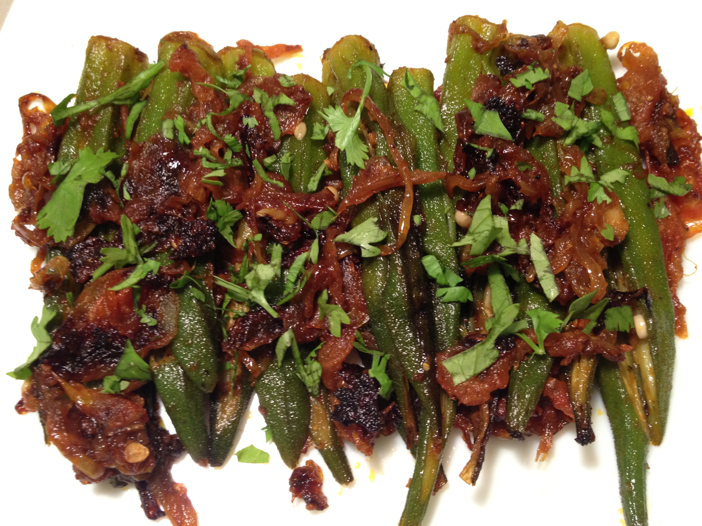

Ingredients
1.Okra/bhindi/ladies finger - 250 gms
2.Gram flour (besan) - 3 tsp
3.Salt
4.Chilli powder - 2 tsp
5.Asafoetida - a pinch
6.Turmeric powder - a pinch
7.Oil - for frying
Method
1. Wash and cut the okra in a slanting shape.
2. Sprinkle salt, chilli powder, gram flour,asafoetida and turmeric powder on top of it and mix well.
3. You will get the okras coated with the gram flour.
4. Fry it in medium heat oi. You will get nice crispy bhindi fry.
Serve hot with chapati, rice etc. When it becomes cold, you will not enjoy the same much.